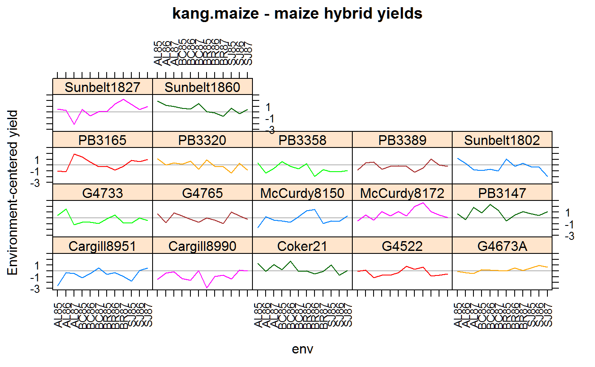

kang.maize.RdMaize yields at 4 locs in 3 years in Louisianna.
data("kang.maize")
gengenotype, 17 levels
envenvironment, 12 levels
yieldyield, tonnes/ha
environment, 13 levels
yearyear, 85-87
loclocation, 4 levels
Yield trials were conducted at four locations (Alexandria, Baton Rouge, Bossier City, and St. Joseph) in Louisiana during 1985 to 1987. Each loc was planted as RCB design with 4 reps. Mean yields are given in this data.
Kang, MS and Gorman, DP. (1989). Genotype x environment interaction in maize. Agronomy Journal, 81, 662-664. Table 2.
Used with permission of Dan Gorman.
library(agridat) data(kang.maize) dat <- kang.maize # Sweep out loc means, then show interaction plot. libs(reshape2) mat <- acast(dat, gen~env, value.var='yield') mat <- sweep(mat, 2, colMeans(mat)) dat2 <- melt(mat) names(dat2) <- c('gen','env','yield') libs(lattice) xyplot(yield~env|gen, data=dat2, type='l', group=gen, panel=function(x,y,...){ panel.abline(h=0,col="gray70") panel.xyplot(x,y,...) }, ylab="Environment-centered yield", main="kang.maize - maize hybrid yields", scales=list(x=list(rot=90)))# Weather covariates for each environment. covs <- data.frame(env=c("AL85","AL86","AL87", "BR85","BR86","BR87", "BC85","BC86","BC87", "SJ85","SJ86","SJ87"), maxt=c(30.7,30.2,29.7,31.5,29.4,28.5, 31.9, 30.4,31.7, 32,29.6,28.9), mint=c(18.7,19.3,18.5, 19.7,18,17.2, 19.1,20.4,20.3, 20.4,19.1,17.5), rain=c(.2,.34,.22, .28,.36,.61, .2,.43,.2, .36,.41,.22), humid=c(82.8,91.1,85.4, 88.1,90.9,88.6, 95.4,90.4,86.7, 95.6,89.5,85))